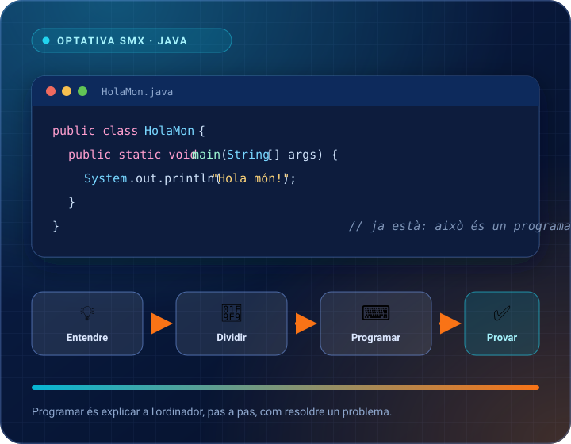

Anem a poc a poc, però de veritat
És millor dominar una variable que haver vist deu coses per damunt. Cada tema es queda ben apamat abans de passar al següent.
Optativa SMX · Introducció a la Programació
Programa complet del curs: fonaments de programació, metodologia de les sessions de 3 hores, materials, activitats interactives i criteris d'avaluació. Optativa de Sistemes Microinformàtics i Xarxes per a alumnat de 16 anys sense experiència prèvia en programació.
Un curs per a qui no ha programat mai res. Comencem preguntant-nos què significa programar i acabem construint els nostres propis programes. Sense presses i sense màgia.

L'objectiu no és «saber molta sintaxi de Java». L'objectiu és que al final del curs pugues pensar: «sé agafar un problema, dividir-lo en passos i convertir-lo en un programa». Java és l'eina amb què aprendrem a fer-ho.
És millor dominar una variable que haver vist deu coses per damunt. Cada tema es queda ben apamat abans de passar al següent.
Cada tema treballa la pregunta clau: què he de guardar?, quina condició s'ha de complir?, quantes vegades s'ha de repetir?
Videojocs, notes, xarxes socials, música, esports, botigues, contrasenyes o diners. Res de problemes abstractes d'empresa els primers dies.
Teoria curta, exemple, i mans al teclat. Al final de cada sessió hi ha un repte per pensar i codi escrit per tu.
Hi ha una secció d'«errors habituals» en cada tema: què ha passat, per què, com detectar-ho i com corregir-ho. Un error és informació, no un fracàs.
Aprendrem a utilitzar la IA com un assistent: explicar errors, generar proves, millorar codi… sempre que entengues què fa el programa.
Quan NO introduïm coses. Els primers temes no porten arrays, ni mètodes, ni objectes, ni estructures avançades. Si apareix alguna part tècnica inevitable (per exemple public static void main(String[] args)), a classe direm: «açò de moment és la carcassa que necessita Java per arrancar; ja ho entendrem més avant».
Tres hores donen per a molt, però no per a tres hores de teoria. Esta és la distribució orientativa que fem servir: explica, veure, provar, programar i repassar.
Explicació i demostracions
Partim d'una situació real, expliquem una idea i veiem exemples al projector. Cada idea va acompanyada d'un exemple executat davant de la classe.
Programació guiada
Construïm un programa entre tots, pas a pas. El codi NO es dona acabat: es va pensant en veu alta, provant, trencant-lo i arreglant-lo.
Exercicis pràctics
Exercicis curts i exercicis principals, de menor a major dificultat. Les solucions permeten comparar i corregir el codi propi.
Repàs i repte final
Resum visual, autoavaluació i el repte obert. Tanquem la sessió recordant les 5 preguntes que mai podem oblidar.
Esta distribució és orientativa. Alguns temes necessiten més temps de proves i errors (bucles, arrays, objectes) i uns altres necessiten més explicació (mètodes, construcció completa).
Regla pràctica: si al final de la sessió la majoria no ha provat codi propi, el ritme va massa ràpid.
Un Tema 0 d'introducció i nou temes de tres hores cadascun. L'orde està pensat perquè cada concepte nou es recolze en els anteriors: ningú no es troba un objecte abans de saber què és un mètode.
Els temes es publiquen d'un en un. Cada tema s'afegirà a este mapa quan el seu material complet estiga llest (pàgina web, exercicis, solucions, autoavaluació i presentació de classe). Les targetes que posen «En preparació» encara no tenen pàgina.
Fins a la sessió 5 pràcticament construirem «pensament de programador»: guardar dades, decidir, repetir, treballar amb moltes dades i dividir el programa en parts. La programació orientada a objectes arriba en la sessió 6, quan ja tenim eines per entendre-la. Les dos últimes sessions connecten tot això amb la programació real de 2026.
Temes 0 a 5 · Classes 1 a 6 · Aquí aprenem a pensar
Temes 6 i 7 · Classes 7 i 8 · Aquí aprenem a organitzar
Temes 8 i 9 · Classes 9 i 10 · Aquí connectem amb el món
String útil; res d'herència ni col·leccions avançades.Mateix contingut, tres usos distints: l'alumnat estudia i pràctica a la web, el professorat projecta les diapositives i repartix el manual en PDF.
Suggeriment d'ús a l'aula: projecta el PowerPoint en la part d'explicació, passa a l'editor per a la programació guiada i acabem amb la pàgina web projectada per fer l'autoavaluació tots junts.
Temps recomanat: 30-45 min d'explicació amb diapositives, 60-75 min de codi guiat, 60-75 min d'exercicis i 15-30 min de repàs i repte.
Consell de programador: val més reescriure cinc línies enteses que copiar cinquanta que no saps què fan. Si no pots explicar el codi, no el controles.
Java es pot escriure i executar de dos maneres: des del navegador (entorns en línia, sense instal·lar res) o a l'ordinador (amb el JDK instal·lat i un entorn de desenvolupament). No hi ha cap opció obligatòria: en totes s'escriu el mateix codi i s'executa el mateix llenguatge.
javac i la màquina virtual java, que són els que convertixen el codi font en un programa que s'executa.Els més utilitzats en ensenyament i en el món professional:
S'escriu el codi al navegador i es compila en un servidor. Útil quan no es pot instal·lar programari o es treballa en un ordinador compartit.
javac HolaMon.java // compila: convertix el codi font en bytecode
java HolaMon // executa el programa a la màquina virtualConvenció de fitxers: cada tema tindrà la seua carpeta (tema1/, tema2/…) i cada exercici un fitxer amb un nom clar (Exercici3Notes.java). El nom del fitxer ha de coincidir amb el nom de la classe pública.
No s'avalua memoritzar sintaxi. S'avalua si eres capaç de resoldre problemes senzills, escriure codi que funcione, trobar els errors i explicar què has fet.
Exercicis curts i exercicis fets a l'aula, funcionant i ben explicats. Es pot corregir i millorar.
El repte final de cada tema, sobretot a partir del Tema 4. Interessa el procés: dividir el problema, provar i millorar.
Preguntes d'autoavaluació, participació, ajudar els companys, provar coses noves i no tindre por d'equivocar-se.
Un programa senzill fet a l'ordinador, amb els apunts oberts si cal. Val més un codi simple que funcione, ben comentat i explicat.
| Nivell | Què veiem |
|---|---|
| Excel·lent | Funciona, està dividit en passos, provat amb casos distints i ben explicat. |
| Bé | Funciona en els casos principals; algun detall es pot millorar. |
| En procés | Funciona a mitges; cal més pràctica amb l'estructura del tema. |
| A repassar | No funciona o no s'entén el codi: tornarem a fer la programació guiada junts. |
Les referències del llenguatge, les ferramentes que es fan servir per programar i les regles del curs per treballar-hi.
El llenguatge i la documentació oficial.
Els IDE més utilitzats en ensenyament i en el sector professional.
S'utilitzen a partir del Tema 8, sempre revisant el codi.
Cada tema tindrà la seua carpeta de treball.
tema1/Variables.java, tema1/Exercici2.java…Entorns i instal·lació. Hi ha entorns en línia, que funcionen directament des del navegador sense instal·lar res, i entorns d'escriptori, que es baixen i s'instal·len a l'ordinador. A l'apartat «Materials i entorn» tens la llista completa dels uns i dels altres.
Cada tema es publica complet (pàgina web, exercicis amb solució, autoavaluació, PDF i PowerPoint). Ací pots vore què està llest i què falta.
| Tema | Pàgina web | Solucions | Autoavaluació | PowerPoint |
|---|
Llevant de l'estructura, este repositori conté el motor comú: full d'estil, plantilla de tema, generador de PowerPoint, manual imprimible i la guia didàctica per al professorat. Els temes s'afegixen damunt d'esta base, un a un, per orde.
Este material l'ha creat el professorat de l'IES La Vereda per a l'optativa Introducció a la Programació de Sistemes Microinformàtics i Xarxes.
Material creat per Agustín Gil - IES La Vereda 2026
Llicència Creative Commons Reconeixement-NoComercial 4.0 Internacional (CC BY-NC 4.0).